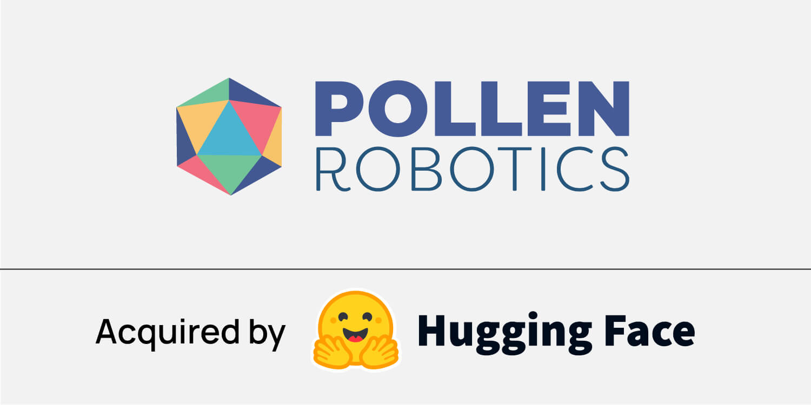
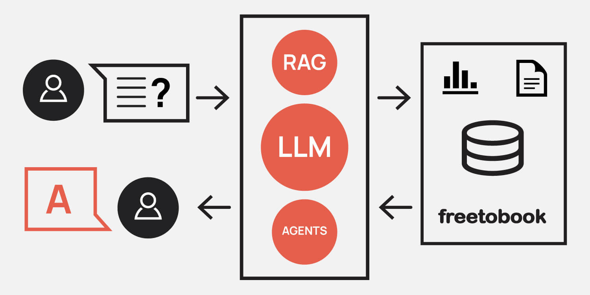
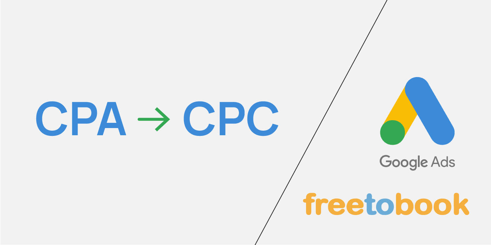
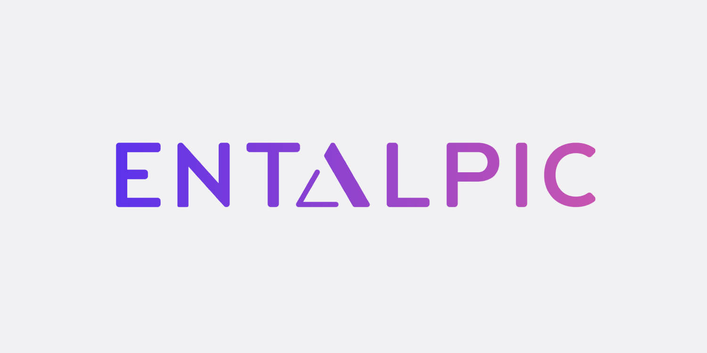
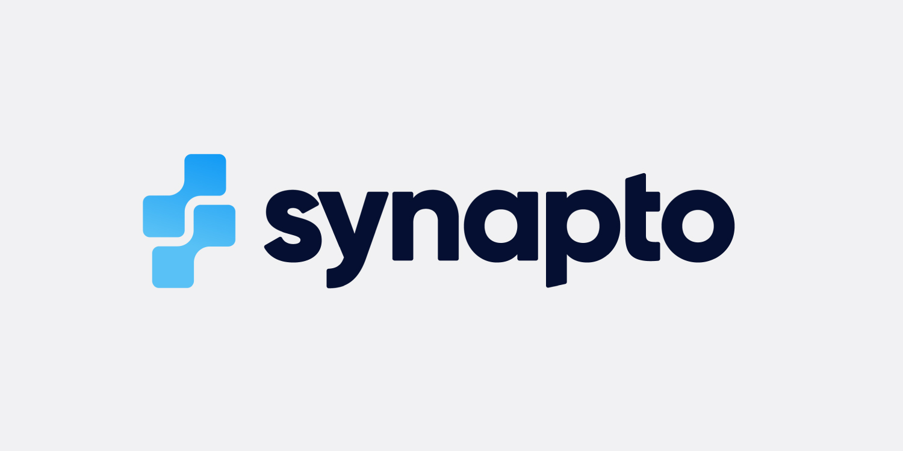
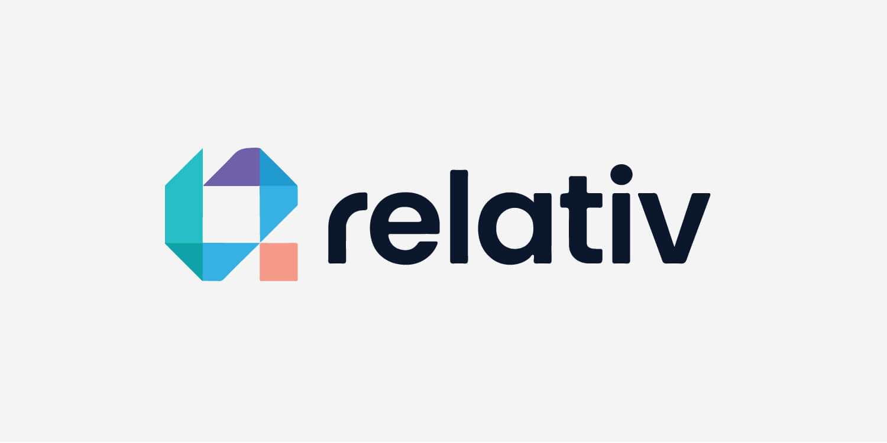
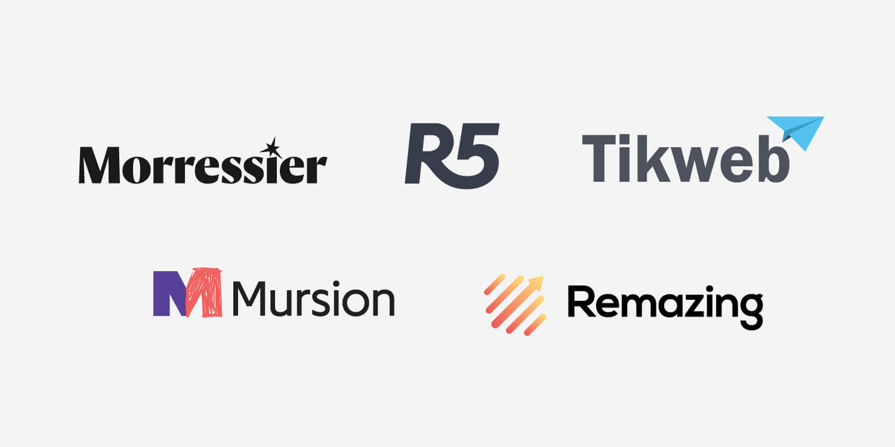
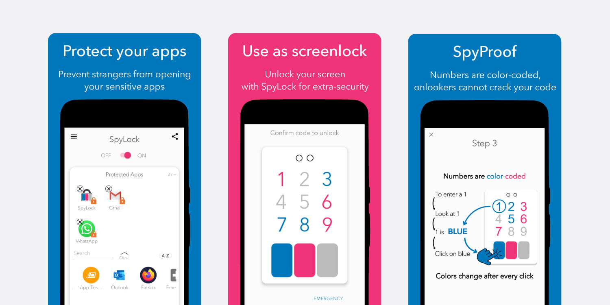

Pollen Robotics was acquired by HuggingFace in 2025

Freetobook receives hundreds of tickets per week

Google ended CPA in February 2025

Entalpic raised a 8.5M$ seed round

Synapto raised a 1.5M£ pre-seed round

Relativ is born from a scientific publication in Nature

International cohort of growing start-ups

SpyLock spinned-off from my research
If you have a project you would like consultancy for, contact me to discuss it further.
get in touch